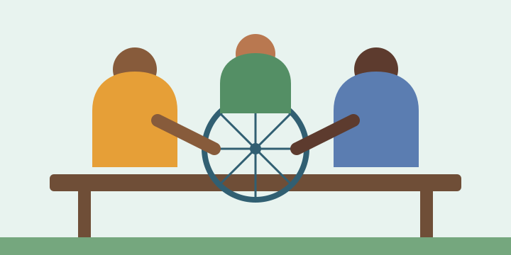

About the fair
Saturday, October 17, 2026, from 9:00 a.m. to 4:00 p.m. at the Waterloo Memorial Recreation Complex. Admission is free, and visitors may attend one session or stay for the whole day.
What can visitors learn?
Try useful skills for everyday life, including bicycle care, household repairs, digital safety, community gardening, and emergency preparedness. Each session is designed around a practical demonstration, with time to ask questions and learn by doing.
Who should attend?
The fair welcomes Waterloo residents of all experience levels, from curious beginners to neighbours ready to share what they know. Families are welcome; visitors under 12 should participate with an adult. No previous training is required—just bring your curiosity.

Program schedule
Sessions are drop-in unless otherwise noted. A quiet seating area and refill station will be available throughout the day.
| Time | Session | Location |
|---|---|---|
| Welcome and community skill swap | Community Pavilion | |
| Bicycle check-up basics | Workshop Bay | |
| Safer passwords and scam spotting | Room 201 | |
| Grow herbs in small spaces | Garden Terrace | |
| Patch, fasten, and fix at home | Workshop Bay | |
| Build a household emergency kit | Room 201 |
Register your interest
Registration helps us prepare enough materials. You may still attend if you do not register.
Keep learning locally
Explore the City of Waterloo community programs for more recreation and learning opportunities.
Find workshops, technology help, and reading resources through the Waterloo Public Library.
Contact and location
For event or accessibility questions, call 519-884-1550 or email skillsfair@waterloo.ca.
Waterloo Memorial Recreation Complex101 Father David Bauer Drive
Waterloo, Ontario N2L 0B4
Canada